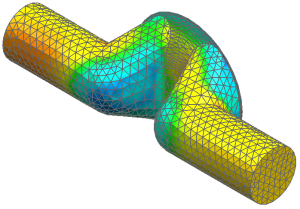

View a contour display of the flow results
 Post Processing Navigator
Post Processing Navigator
-
 steady state
steady state -
 Load
Load -
steady state
-
New Postview

|
Note |
A contour plot of nodal velocities is displayed. The flow slows down around the blue areas and rises to approximately 4 m/s around the red areas. |